Целта е да се изследва съчетаването на три модела за организация на изпълнението — асинхронност за вход/изход,
паралелизъм за изчислително интензивна обработка и реактивност за управление на събития и нови резултати — в общ
приложен сценарий. Разработено е конзолно приложение StreamPipeline, което приема, обработва и представя поток
от вибрационни измервания.
| Параметър | Избран вариант |
|---|---|
| Източник на данни | 16 отдалечени вибрационни сензора (акселерометри) на въртящи се машини. Всеки изпраща кадри от 16 384 отчета при 25,6 kHz (0,64 s сигнал) по симулирана мрежова връзка с латентност 2 ms ± 1 ms. Сигналът съдържа честота на вала (24–55 Hz) с хармоници, гаусов шум и — при 4 от сензорите — развиващ се дефект на външния пръстен на лагер (затихващи удари, възбуждащи резонанс около 3 kHz, с честота BPFO = 3,57·fвал). Генераторът е детерминиран (seed), т.е. входните данни са възпроизводими. |
| Обработващи операции | (1) валидиране и статистики във времевата област — RMS, пик, crest factor, ексцес; (2) спектрална плътност по Welch (Hann, 1024 точки, 50% припокриване, 31 сегмента) → дял на високочестотната енергия; (3) FFT на целия кадър → честота на вала; (4) обвиващ анализ: лентов филтър 2–4,5 kHz в честотната област, аналитичен сигнал (Хилбертова трансформация чрез IFFT), спектър на обвиващата → индекс на дефект (енергия около BPFO, 2·BPFO, 3·BPFO спрямо общата). Цена: ≈1,3–1,5 ms процесорно време на кадър (≈ 680–800 кадъра/s на ядро). |
| Характеристики на натоварването | Обща входна честота 250–7000 кадъра/s (≈ 32–900 MB/s сурови данни); равномерни или поасонови пристигания; степен на паралелизъм 1–15; ограничена опашка (256 кадъра) с политика Wait или DropOldest; буфер в устройството 1 s. |
| Наблюдавани сценарии | normal — нормална работа и аларми; faults — мрежови грешки (2%), повредени кадри (1%), трайно отпаднал сензор; fatal — неустранима грешка (неподдържан протокол); cancel — претоварване и твърдо прекратяване; overload — претоварване с изхвърляне на най-старите кадри. |
Изискването „не заменяйте реалните изчисления с Task.Delay“ е спазено: Task.Delay се използва само на две места,
и двете моделират изчакване на мрежата — пристигането на следващия кадър (разписание + латентност) и отлагането преди повторен опит
след мрежова грешка. Цялата обработка е реално изчисление (собствена реализация на FFT по Cooley–Tukey).
SimulatedSensorClient.ReceiveAsync изчаква (асинхронно) момента на пристигане на следващия кадър, „декодира“ го в буфер, нает от ArrayPool<double>, и му поставя времеви печати заснет (по разписание на сензора) и приет.await writer.WriteAsync. Ако опашката е пълна: при Wait сензорът чака (обратен натиск); при DropOldest най-старият кадър се изхвърля и буферът му се връща в пула.Parallel.ForEachAsync взима кадъра (ReadAllAsync), изпълнява синхронно SpectralAnalyzer.Analyze и връща буфера в пула.FrameAnalyzed в EventHub; оттам Rx операторите го разпределят към метриките, алармите и таблото. Отхвърлените кадри, повторните опити и отпадналите сензори също са събития в същия поток.OnCompleted (или OnError) и изчаква ReactiveMonitor.Completion — така последният непълен прозорец на Buffer също се обработва.| Модел | Къде | Защо точно този модел |
|---|---|---|
Асинхронностasync/await |
SimulatedSensorClient.ReceiveAsync, RunSensorAsync (повторни опити, WriteAsync) |
Приемът е ограничен от I/O: 16 връзки прекарват почти цялото си време в чакане на мрежата. С await чакащата операция не държи нишка — при 7000 кадъра/s 16-те сензора използват общо под 0,3 ядра. Синхронна реализация би изисквала по нишка на връзка и би се конкурирала с изчислителните работници за процесора. Обратният натиск също е асинхронен: WriteAsync при пълна опашка освобождава нишката. |
ПаралелизъмParallel.ForEachAsync |
PipelineRunner.RunProcessingAsync → SpectralAnalyzer.Analyze |
Анализът е чисто изчисление (≈1,4 ms процесорно време, без I/O) и кадрите са независими — класически паралелизъм по данни. Parallel.ForEachAsync консумира директно асинхронен източник (ReadAllAsync), ограничава броя едновременни работници (MaxDegreeOfParallelism) и поддържа CancellationToken; при изключение в тялото отменя останалите работници и го предава нагоре. async тук не би донесъл нищо — няма какво да се чака. |
РеактивностSystem.Reactive |
EventHub, ReactiveMonitor, HealthTracker |
Резултатите са поток от събития, на които трябва да реагират няколко независими потребителя с времева логика: аларма при промяна на състоянието за всеки сензор поотделно, агрегиране по секунди, журнал на грешките. Rx изразява това декларативно (GroupBy, Scan, DistinctUntilChanged, Buffer, TakeUntil) и има ясен договор за завършване (OnCompleted/OnError), който естествено пренася състоянието на целия поток до потребителите. |
КоординацияChannel<T> |
PipelineRunner.CreateChannel |
Rx няма обратен натиск — бърз производител би препълнил паметта. Ограниченият канал е мостът между асинхронния и паралелния етап: развързва ги по скорост, ограничава натрупаната работа (най-много 256 кадъра ≈ 32 MB) и избира политика при претоварване. Затварянето му (TryComplete) е сигналът за край на входа. |
Работата може да се натрупа на три места и всяко е ограничено: (1) в устройството — ако консуматорът забави сензора с повече от 1 s, най-старите кадри се губят (overrun); (2) в канала — най-много 256 кадъра; (3) в Rx — абонатите са синхронни и евтини (O(1) на събитие), а Buffer(1 s) държи само текущата секунда. При Wait пълната опашка забавя сензорите и загубата се премества в източника; при DropOldest загубата е в опашката, но в нея винаги остават най-новите данни.
| Вид | Къде възниква | Обработка | Ефект върху потока |
|---|---|---|---|
Преходна мрежова грешка (IOException) | прием | до 3 повторни опита с експоненциално отлагане (20, 40, 80 ms); кадърът се изисква отново, не се губи; събитие SensorRetry | продължава |
| Трайно отпаднал сензор | прием | след изчерпване на опитите — събитие SensorOffline, цикълът на този сензор завършва | продължава с останалите 15 |
| Повреден кадър (NaN) | обработка | InvalidDataException се хваща в тялото на работника, събитие FrameRejected, буферът се връща | продължава |
| Неустранима грешка (неподдържан протокол) | обработка | FatalPipelineException не се хваща → Parallel.ForEachAsync отменя работниците; ръководителят отменя източниците, отчита остатъка и извиква OnError | спира; статус Faulted |
| Неочаквана грешка в приема | прием | writer.TryComplete(ex) — каналът завършва с изключение, което ReadAllAsync хвърля в паралелния етап | спира; OnError |
Принципът е: локалните грешки стават събития (видими и броими в реактивния поток), а неустранимите грешки прекратяват потока и стигат до всички абонати като OnError. Нито едно изключение не „изчезва“: отчетът на всяко изпълнение балансира приети = обработени + отхвърлени + изхвърлени + останали + прекъснати.
Плавно спиране (изтичане на Duration или първо Ctrl+C) отменя само stopCts, който спира приема на нови кадри. Кадър, който сензорът вече държи, се записва в канала (за WriteAsync се използва само твърдият токен — грешка, открита с тест при разработката: иначе се губеше по един приет кадър). Каналът се затваря, работниците изпразват опашката и потокът завършва с OnCompleted.
Твърдото прекратяване (CancelAfter, второ Ctrl+C, фатална грешка) отменя hardCts, свързан с всички етапи: WriteAsync и Parallel.ForEachAsync се прекъсват веднага, а останалите в опашката кадри се преброяват и връщат в пула.
Асинхронен прием с повторни опити (PipelineRunner.RunSensorAsync, съкратено):
while (!ct.IsCancellationRequested)
{
SensorFrame frame;
for (int attempt = 0; ; )
{
try { frame = await sensor.ReceiveAsync(ct); break; } // I/O
catch (IOException ex)
{
if (++attempt > _o.MaxRetries) { _hub.Publish(new SensorOffline(...)); return; }
_hub.Publish(new SensorRetry(...));
await Task.Delay(_o.RetryBaseDelay * Math.Pow(2, attempt - 1), ct); // изчакване на мрежата
}
}
await writer.WriteAsync(frame, hardCt); // точка на обратен натиск
}
Паралелна обработка (RunProcessingAsync):
return Parallel.ForEachAsync(reader.ReadAllAsync(),
new ParallelOptions { MaxDegreeOfParallelism = dop, CancellationToken = ct },
(frame, token) =>
{
try { _hub.Publish(new FrameAnalyzed(analyzer.Analyze(frame, Stopwatch.GetTimestamp()))); }
catch (InvalidDataException ex) { _hub.Publish(new FrameRejected(...)); } // локална грешка
finally { ArrayPool<double>.Shared.Return(frame.Samples); }
return ValueTask.CompletedTask; // FatalPipelineException излиза навън
});
Реактивни аларми (ReactiveMonitor.Start) — машина на състоянията с хистерезис, отделна за всеки сензор, без нито едно заключване и без изрично съхранявано състояние:
analyzed.GroupBy(r => r.SensorId)
.SelectMany(g => g.Scan(HealthTracker.Initial(g.Key), (s, r) => s.Next(r)) // EWMA + хистерезис
.DistinctUntilChanged(s => s.State) // само промени
.Where((s, i) => i > 0 || s.State != HealthState.Normal))
.Select(s => new HealthChanged(...));
Мостът паралелно → реактивно. Договорът на Rx забранява едновременни OnNext; работниците публикуват от много нишки, затова EventHub обвива Subject със Subject.Synchronize. Всички абонати делят един абонамент (Publish/Connect), а Completion е Task.WhenAll от задачите, които завършват при OnCompleted/OnError на всеки абонат.
Ефективност. Буферите на кадрите (128 KB, т.е. в Large Object Heap) идват от ArrayPool, а работните масиви на FFT са ThreadLocal — затова при хиляди кадри в секунда има 0–1 събирания на боклук (gen2) за цяло изпълнение. Използва се Server GC.
Тестове. 13 xUnit теста: коректност на FFT/IFFT; откриване на честотата на вала и на дефекта; отхвърляне на NaN; фатален протокол; плавно спиране с пълно отчитане на кадрите; повредени кадри; отпаднал сензор; фатална грешка → OnError преди изтичане на времето; външно прекратяване; DropOldest; хистерезис; Rx веригата GroupBy→Scan→DistinctUntilChanged.
| Елемент | Стойност |
|---|---|
| Машина | Apple M5 Pro, 15 логически процесора (5 производителни + 10 ефективни ядра), macOS 26 (Darwin 25.6), .NET 8.0.32, Arm64, Server GC, Release |
| Постоянни параметри | 16 сензора; кадър 16 384 отчета; опашка 256; мрежа 2 ms ± 1 ms; буфер в устройството 1 s; seed 42 |
| Продължителност | 6 s на изпълнение, от които първата 1 s е загряване (JIT, растеж на пула от нишки) и е изключена от статистиките |
| Експеримент 1 | входна честота {250, 500, 1000, 2000, 3000, 5000, 7000} × DOP {1, 2, 4, 8, 12, 15}, политика Wait — 42 изпълнения |
| Контролно измерване | само изчислителният етап (Parallel.For над предварително генерирани кадри, без канал, сензори и Rx), 3 s за всяко DOP |
| Експеримент 2 | {500 … 5000} кадъра/s при DOP 2, Wait срещу DropOldest |
| Експеримент 3 | равномерни срещу поасонови пристигания при 800/1100/1250 кадъра/s и DOP 2 (близо до капацитета ≈ 1550/s), 3 повторения с различен seed |
| Експеримент 4 | 1100 кадъра/s, DOP 2, 8 повторения × {QoS по подразбиране, USER_INTERACTIVE}, редувани |
| Сценарии | normal, faults, fatal, cancel, overload — по 10 s (или до прекратяване) |
Метрики. Пропускателност — обработени кадри след загряването / време до последния резултат. Входна честота — действително приети кадри/s (при обратен натиск е по-ниска от целевата). Латентност e2e — от приемането на кадъра до публикуването на резултата = чакане в опашката + изчисление. Възраст на данните — от заснемането в сензора до резултата (включва и изоставането на сензора при обратен натиск). Всички времена са с Stopwatch.GetTimestamp. Процесорът е Process.TotalProcessorTime / стенно време. Суровите данни (по кадър, по секунда, резюмета) са в data/.
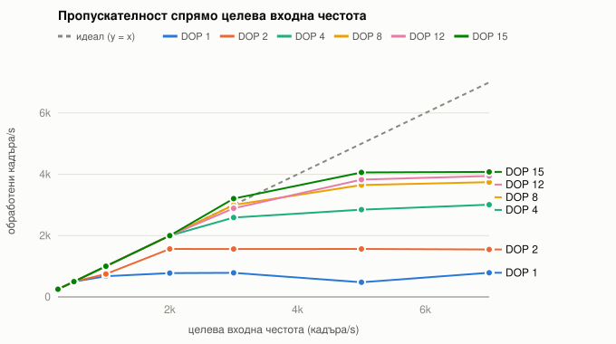
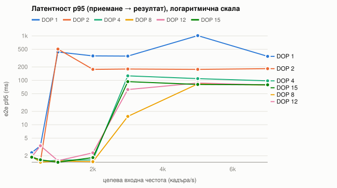
Забележка: точките DOP 2 при 1000/s (748/s, опашка 256) и DOP 1 при 5000/s (479/s) са засегнати от временното забавяне на работниците, описано в раздел 7.5; всички останали точки на DOP 1 и 2 са в интервала 775–790 и 1546–1570 кадъра/s.
| DOP | макс. пропускателност (кадъра/s) | ускорение | e2e p50 под насищане (ms) | e2e p50 при насищане (ms) | 256 / пропуск. (ms) | CPU (ядра) |
|---|---|---|---|---|---|---|
| 1 | 790 | 1,0 | 1,6–1,8 | 346–564 | 324 | 1,2 |
| 2 | 1 566 | 2,0 | 1,3–1,6 | 175 | 163 | 2,4 |
| 4 | 3 010 | 3,8 | 1,3–1,4 | 91–101 | 85 | 4,8 |
| 8 | 3 744 | 4,7 | 1,3–2,3 | 74–76 | 68 | 8,9 |
| 12 | 3 944 | 5,0 | 1,3–1,7 | 67–69 | 65 | 8,9 |
| 15 | 4 078 | 5,2 | 1,3–1,4 | 65–66 | 63 | 9,2 |
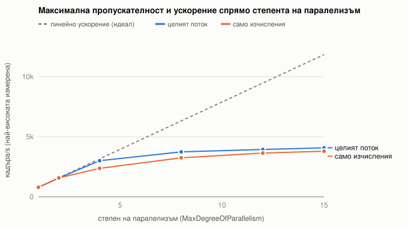
Parallel.For без канал и Rx) и линейното ускорение.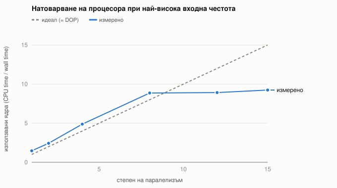
| DOP | само изчисления (кадъра/s) | ускорение | CPU (ядра) | цял поток (кадъра/s) |
|---|---|---|---|---|
| 1 | 795 | 1,00 | 1,00 | 790 |
| 2 | 1 573 | 1,98 | 1,98 | 1 566 |
| 4 | 2 369 | 2,98 | 3,94 | 3 010 |
| 8 | 3 250 | 4,09 | 6,85 | 3 744 |
| 12 | 3 642 | 4,58 | 7,74 | 3 944 |
| 15 | 3 797 | 4,77 | 8,07 | 4 078 |
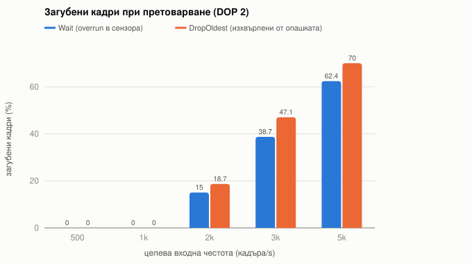
Wait загубата е в сензора (overrun), при DropOldest — в опашката.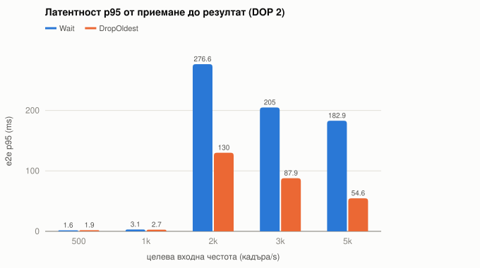
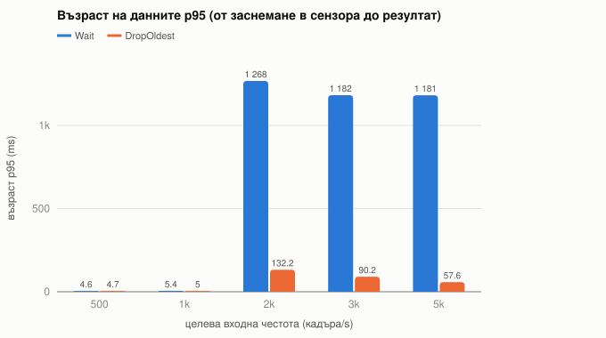
| Вход (кадъра/s) | Политика | приети/s | пропуск./s | загубени | e2e p95 (ms) | възраст p95 (ms) |
|---|---|---|---|---|---|---|
| 2000 | Wait | 1 409 | 1 385 | 1 510 overrun (15%) | 277 | 1 267 |
| 2000 | DropOldest | 2 008 | 1 587 | 2 250 изхвърлени (19%) | 130 | 132 |
| 3000 | Wait | 1 505 | 1 499 | 5 835 overrun (39%) | 205 | 1 182 |
| 3000 | DropOldest | 3 012 | 1 556 | 8 498 изхвърлени (47%) | 88 | 90 |
| 5000 | Wait | 1 539 | 1 532 | 15 665 overrun (62%) | 183 | 1 181 |
| 5000 | DropOldest | 5 021 | 1 439 | 21 081 изхвърлени (70%) | 55 | 58 |
| Вход (кадъра/s) | Пристигания | seed 1 | seed 2 | seed 3 |
|---|---|---|---|---|
| 800 | равномерни | 1,8 (800/s) | 1,4 (800/s) | 53,9 (800/s) |
| 800 | поасонови | 1,8 (815/s) | 15,7 (806/s) | 904,1 (575/s) |
| 1100 | равномерни | 1,6 (1100/s) | 8,2 (1100/s) | 1 249,6 (602/s) |
| 1100 | поасонови | 5,2 (1103/s) | 797,5 (790/s) | 479,2 (922/s) |
| 1250 | равномерни | 547,0 (1145/s) | 51,1 (1240/s) | 335,7 (931/s) |
| 1250 | поасонови | 5,5 (1281/s) | 5,3 (1245/s) | 151,8 (954/s) |
Стойност: чакане в опашката p95 (ms); в скоби — пропускателност. С удебелен шрифт са изпълненията, в които опашката се е напълнила (256) поради временно забавяне на работниците (вж. 7.5).
Теорията на опашките предвижда, че при същата средна честота поасоновите пристигания (по-голяма вариация) дават по-голямо чакане близо до насищане. Данните не позволяват надежден извод: от четирите двойки, в които нито едното изпълнение не е засегнато от забавяне, поасоновите дават по-високо чакане в две (5,2 срещу 1,6 ms при 1100/s; 15,7 срещу 1,4 ms при 800/s), равно в една и по-ниско в една (5,3 срещу 51,1 ms при 1250/s). Ефектът е по-малък от променливостта на платформата: 9 от 18 изпълнения съдържат епизод, в който капацитетът на двата работника временно пада от ≈ 1550 до 600–1000 кадъра/s.
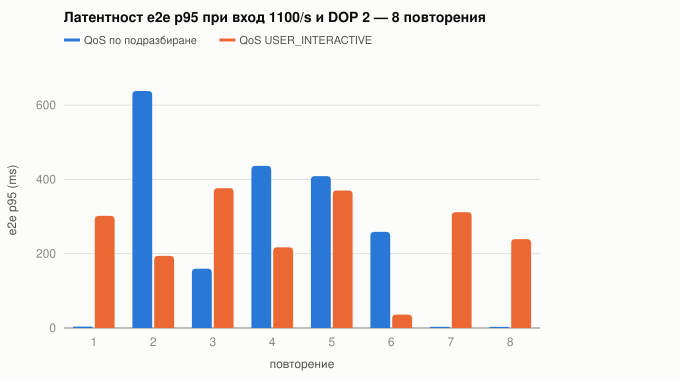
--qos). Без забавяне p95 е ≈ 3 ms; стойностите над 150 ms са изпълнения с епизод на забавяне.По време на забавянията и двете нишки са заети (CPU 2,0–2,2 ядра), но обработват по-малко кадри — т.е. изпълняват се по-бавно, а не са блокирани. Първоначалната хипотеза беше, че ОС ги премества на ефективните ядра. Тя е проверена с експеримент 4: работниците искат QoS клас USER_INTERACTIVE (pthread_set_qos_class_self_np), който подсказва на планировчика да ги държи на производителните ядра. Резултат: опашката се напълва в 5 от 8 изпълнения без QoS и в 7 от 8 с QoS — хипотезата не се потвърждава, подсказката не помага. Най-вероятното обяснение е конкуренция с други процеси на същия работен компютър (експерименти 1 и 2 са изпълнени по-рано, при по-слабо натоварена машина, и нямат такива епизоди), но причината не е установена окончателно. За архитектурата изводът е, че ограниченият буфер поглъща кратките епизоди без загуба на данни, а при по-дълги латентността стига тавана капацитет/пропускателност.
| Сценарий | Статус / край на Rx потока | приети | обработени | Отчетено |
|---|---|---|---|---|
| normal (400/s, DOP 8, 10 s) | Completed / OnCompleted | 4 015 | 4 015 | 8 промени в здравето — само за сензорите с дефект (1, 5, 9, 13): Normal → Warning → Critical |
| faults | Completed / OnCompleted | 3 838 | 3 800 | 74 повторни опита, 38 отхвърлени кадъра (≈1%), сензор 3 извън линия след 3,1 s; 3 800 + 38 = 3 838 |
| fatal | Faulted / OnError(FatalPipelineException) | 1 616 | 1 614 | спрян на 4,04 s вместо 10 s; 1 кадър в опашката + 1 фатален кадър |
| cancel (3000/s, DOP 2) | Cancelled / OnCompleted | 6 142 | 5 870 | прекъснат на 4,00 s; 256 в опашката + 16 в ръцете на сензорите (по един на сензор, блокирани в WriteAsync); 2 862 overrun |
| overload (3000/s, DOP 2, DropOldest) | Completed / OnCompleted | 30 104 | 14 275 | 15 829 изхвърлени; e2e p95 88 ms |
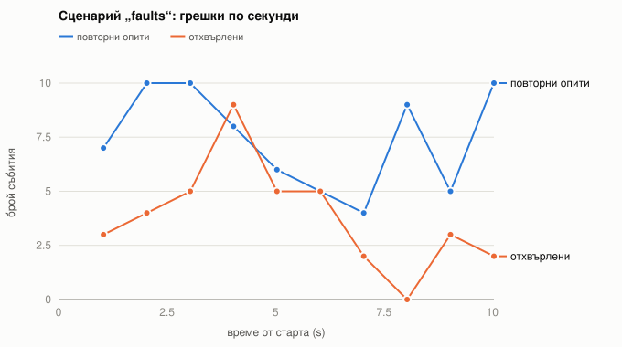
SensorOffline).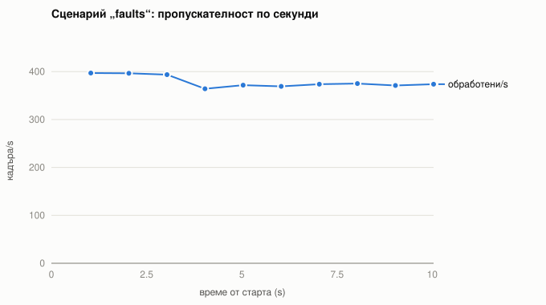
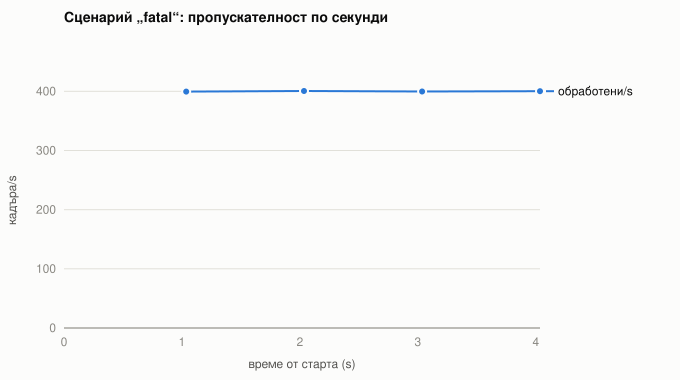
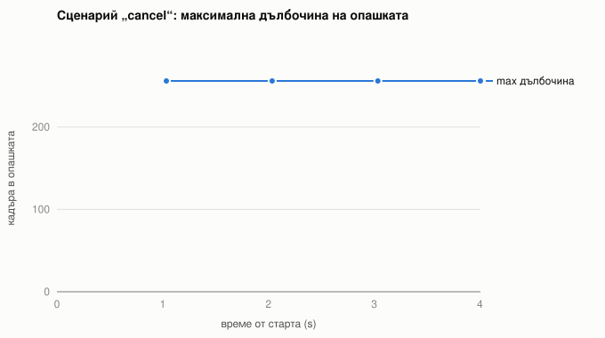
Асинхронни са всички операции, при които се чака: четенето от сензора (ReceiveAsync), отлагането преди повторен опит и записът в пълна опашка (WriteAsync). Наблюдение: при 7000 кадъра/s и DOP 15 процесът използва ≈ 9,2 ядра, а контролното измерване — 8,1 ядра за същите изчисления; разликата (< 1 ядро) включва 16-те асинхронни връзки, генерирането на сигнала (0,04 ms/кадър) и Rx. Шестнадесет синхронни връзки биха изисквали 16 блокирани нишки.
Паралелни са само анализите (SpectralAnalyzer.Analyze) — единственото място, където процесорът реално работи. Паралелизмът дава почти линейно ускорение до 4 работника (×2,0 при DOP 2, ×3,8 при DOP 4), а латентността под насищане не зависи от DOP (≈ 1,4 ms), защото един кадър винаги се обработва от една нишка — паралелизмът увеличава пропускателността, не намалява латентността на отделния кадър.
Реактивни са всички потребители на резултатите. Те не правят тежки изчисления и затова не се нуждаят от собствена нишка — изпълняват се синхронно в нишката на публикуващия работник, под заключването на Subject.Synchronize.
Натрупване. Експериментите потвърждават, че опашката е единственото място с неограничено чакане и че то е ограничено от капацитета: при насищане латентността е почти точно капацитет / пропускателност (DOP 2: 175 ms при 256/1566 = 163 ms; DOP 15: 65 ms при 63 ms). Изборът на политика е компромис между свежест и непрекъснатост: при Wait обратният натиск връща загубата в сензора — резултатите са по-стари (възраст p95 ≈ 1,2 s, защото сензорът изостава до размера на буфера си), но кадрите от всеки сензор пристигат в последователни серии; при DropOldest e2e латентността е 2–3 пъти по-ниска (55 срещу 183 ms при 5000/s) и възрастта на данните е 20 пъти по-малка (58 срещу 1181 ms), за сметка на повече изхвърлени кадри и малко по-ниска пропускателност (≈ 1440 срещу 1530/s, защото сензорите приемат всички 5000 кадъра/s и изразходват процесор за кадри, които после се изхвърлят). За мониторинг на машини, където е важно текущото състояние, по-подходяща е DropOldest.
Пристигания. Теоретично поасоновите пристигания трябва да увеличат чакането близо до насищане; в чистите изпълнения това се наблюдава в 2 от 4 двойки, т.е. ефектът не може да бъде отделен от променливостта на платформата (раздели 7.4–7.5).
Преходно забавяне. При едно от изпълненията (запазено в data/exp3-arrival-run0-transient-stall) двата работника временно паднаха от ≈ 1500 до ≈ 600 кадъра/s за около 2 s (вероятно миграция на нишките към ефективните ядра от планировчика на ОС). Опашката се напълни (256), латентността p95 стигна 565 ms, а след възстановяването работниците изпразниха натрупаното с 1197 кадъра/s и латентността се върна на 2,7 ms за една секунда — ограниченият буфер поглъща краткотрайни смущения, без загуба на данни.
Грешки. Сценарият faults показва, че локалните грешки не нарушават потока: 74 повторни опита и 38 отхвърлени кадъра не променят латентността (p95 1,65 ms срещу 4,5 ms в normal — разликата е шум от загряването), а отпадането на един сензор намалява входа точно с 1/16. Сценарият fatal показва обратното: една неустранима грешка спира целия поток почти веднага (зададена на 4,00 s, статус Faulted на 4,04 s) и достига до реактивните абонати като OnError.
Завършване. При плавно спиране всеки приет кадър е обработен (normal: 4015 = 4015, 0 в опашката), а реактивният поток завършва с OnCompleted едва след като последният резултат е отразен — което се вижда от последния (непълен) ред на таблото. При твърдо прекратяване (cancel) загубата е точно преброена: 256 кадъра в опашката + 16 в сензорите. Rx получава OnCompleted, а не OnError, защото прекратяването е желано действие, а не повреда; статусът Cancelled е в отчета.
Пропускателността на целия поток следва контролното измерване (Фигура 4) — т.е. каналът, асинхронният прием и Rx не са тясното място. Над 4 работника ускорението рязко намалява (×4,7 при 8, ×5,2 при 15), а използваните ядра спират около 9 от 15. Същото поведение има и контролното измерване без поток (×4,8 при 15 работника, 8,1 ядра), следователно таванът е на хардуера: процесорът има 5 производителни и 10 ефективни ядра (ефективното ядро е ≈ 2–2,5 пъти по-бавно за тази задача), ядрата споделят кеш и пропускателност към паметта (един кадър се обхожда многократно в 3 масива по 128 KB), а ОС не дава непременно всички ядра на един процес. Затова DOP над броя на производителните ядра носи все по-малко и е безсмислено над броя на логическите процесори.
Subject.Synchronize е глобално заключване. Абонатите тук са евтини (O(1) на събитие, ≈ µs), но ако някой стане бавен (запис в база данни, графичен интерфейс), той ще забави всички работници. Решение: ObserveOn(EventLoopScheduler) за бавните абонати — но тогава натрупването се премества в неограничена вътрешна опашка на Rx, защото Rx няма обратен натиск.Subject.Synchronize.Scan върху EWMA е нечувствителен към това, но анализ, който изисква строга подредба, би изисквал разделяне на опашката по сензор или пренареждане.Task.Delay могат да се забавят — възможно обяснение защо при 3000/s опашката стига 256 при DOP 12 и 15, а при DOP 8 — само 50. Отделни нишки или TaskScheduler с ограничена конкурентност биха ги разделили.Task.Delay; таймерите на ОС имат резолюция ≈ 1 ms, затова при много високи честоти на сензор (> 500 кадъра/s) пристиганията стават по-неравномерни от зададеното.Wait срещу DropOldest).OnError); прекратяването — на плавно (без загуба) и твърдо (с преброена загуба). И двете разделения са видими в отчетите и проверени с тестове.dotnet build -c Release # компилиране dotnet test # 13 теста dotnet run -c Release --project src/StreamPipeline -- scenario faults dotnet run -c Release --project src/StreamPipeline -- run --rate 2000 --dop 4 --policy drop scripts/run-experiments.sh data # всички експерименти (~8 мин.) scripts/build-docs.sh # графики + този PDF
В Visual Studio Code: отворете папката, F5 → изберете сценарий; задачите (build, test, експерименти, документация) са в Terminal → Run Task. Подробности — в README.md.
| Файл / папка | Съдържание |
|---|---|
data/exp1-rate-x-dop/summary.csv | резюме на 42-те изпълнения; runs/*/ — по кадър (latencies.csv), по секунда (timeline.csv), събития, нишки, summary.json |
data/bench-parallel.csv | контролно измерване |
data/exp2-wait-vs-drop/, data/exp3-arrival/, data/exp4-qos/ | експерименти 2, 3 и 4; data/exp3-arrival-run0-transient-stall/ — първото изпълнение на експ. 3 с преходно забавяне |
data/scenarios/*/ | сценарии, вкл. изхода от конзолата (console.log) |
data/*/machine.json | машина, ОС, версия на .NET, параметри |